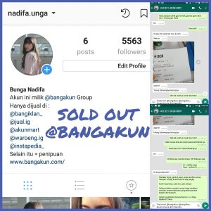
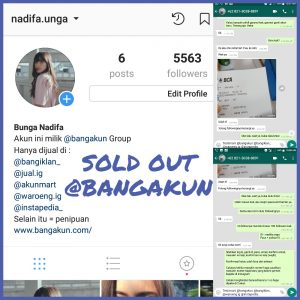

TENTANG
PRODUSEN DAN PENJUAL AKUN INSTAGRAM
BANGAKUN merupakan perusahan yang bergerak di bidang produksi dan penjualan akun instagram. Akun Instagram yang kami jual memiliki jumlah followers mulai dari 1000 Followers sampai dengan 100.000 Followers. BANGAKUN berdiri sejak tahun 2013 dan telah menjual ribuan akun instagram. Pasar penjualan BANGAKUN mayoritas di Indonesia. Selain pasar Indonesia, BANGAKUN telah menjual akun ke pasar luar negri seperti Malaysia, Singapura, Taiwan, Jepang dan India. Akun yang kami produksi dipasarkan dan dijual di beberapa Instagram Market yang dibawahi oleh BANGAKUN :
- Instagram : @bangakun
- Instagram : @bangiklan
- Instagram : @waroeng.ig
- Instagram : @jualig__
- Instagram : @instapedia
- Instagram : @akunmart
KEUNGGULAN PRODUK
REAL FOLLOWERS
Akun yang diproduksi dan dijual oleh BANGAKUN memiliki 100% Real Human Followers; Jaminan Real Followers bukan Fake Followers / BOT Followers.
KEAMANAN
BANGAKUN memberikan jaminan pada setiap akun yang dijual aman dari HACK. Kita dapat menjamin ini karena setiap akun yang kita jual merupakan milik BANGAKUN (Bukan akun titipan orang tidak dikenal)
FOLLOWERS AKTIF
Akun yang diproduksi dan dijual oleh BANGAKUN memiliki Followers aktif. Keaktifan followers sebuah akun instagram dapat dilihat dari jumlah likes dan comment pada akun tersebut.
GARANSI
BANGAKUN memberikan garansi untuk setiap pembelian akun instagram di BANGAKUN. Garansi berupa ganti akun baru dengan followers yang sama jika : 1.Akun kena HACK 2.Followers berkurang banyak dan drastis semenjak pembelian (berkurang >20%)
FOLLOWERS INDONESIA
Akun yang diproduksi dan dijual oleh BANGAKUN memiliki followers mayoritas orang Indonesia (98% Followers Indonesia). Akun Instagram dengan Followers Indonesia ini sangat cocok dijadikan untuk Olshop dengan pasar penjualan di indonesia.
KEUNTUNGAN MEMILIKI AKUN INSTAGRAM YANG MEMILIKI BANYAK FOLLOWERS
Ada banyak keuntungan memiliki akun dengan banyak followers. Keuntungan yang didapatkan tergantung tujuan penggunaan akun tersebut.
AKUN BISNIS (ONLINE SHOP)
Mayoritas pembeli akun di BANGAKUN adalah untuk dijadikan akun Online Shop. Ada banyak keuntungan yang didapakan ketika akun olshop kita memiliki banyak followers.
- Trusted. Mendapatkan kepercayaan dari calon pembeli, sehingga mereka tidak ragu untuk membeli produk kita.
- Media untuk membesarkan Brand dan memperkenalkan produk kita kepada ribuan orang
- Mendapatkan calon pembeli secara instan dari Followers.
AKUN PUBLIK
Bisnis akun publik sangat digemari dan menguntungkan pada era digital sekarang ini. Pemilik akun publik seperti @dagelan, @rahasiagadis tentunya dibanjiri oleh permintaan promote. Harga promote di tiap akun publik tergantung dari jumlah followers dan pengaruhnya di instagram.
SELEBGRAM
Untuk menjadi selebgram tentunya kita harus memiliki jumlah followers yang banyak. Jumlah followers yang banyak nantinya akan menarik permintaan orang untuk promote dan endorse di akun kita. Kita bisa mendapatkan uang dari biaya promote dan barang dari endorse.
MEDIA KAMPANYE POLITIK
Membeli akun untuk media kampanye politik merupakan salah satu cara paling digemari oleh calon anggota legislatif pada saat ini. Hal ini karena bisa menghemat secara signifikan biaya kampanye. Instagram merupakan cara paling efektif untuk mendapatkan suara.
ALUR TRANSAKSI PEMBELIAN AKUN INSTAGRAM
- Kontak Admin di LINE / WA
- Pilih Akun
- Transfer Banking (kirim bukti transfer)
- Pengecekan Oleh Admin
- Uang masuk langsung diberikan ID, Password, email dan password email.
PERTANYAAN YANG SERING DITANYAKAN
Q : Adakah akun dengan followers mayoritas cewek?
A : Hampir tidak pernah ada orang yang menjual akun dengan
followers mayoritas cewek. Kenapa?
1.Karena susah untuk mendapatkam followers cewek.
2.Cewe paling males ngefollow akun gak jelas.
Q : Kenapa gak bikin akun cowok ganteng biar dapatin followers
cewek?
A : Sudah banyak yang mencoba bikin akun cowok ganteng, kebanyakan
followersnya juga cowo lagi (gay).
Q : Adakah jual akun bekas Olshop?
A : Gak ada yang jual akun olshop, kecuali :
1. Olshop dadakan, bekas akun lain dijadikan olshop saat mau
dijual.
2. Olshop gak laku. Karena dagangannya gak laku, akunnya
dijual aja deh.
Q : Aku nyari akun bekas olshop biar dapatin pelanggan dari
olshop sebelumnya kak. Ada?
A : Pelanggan gak bisa dibeli kak, toh dagangan kalian beda.
Laku atau gaknya dagangan kakak tergantung kualitas barang
dan permintaan pasar kak.
Ada gak enaknnya beli akun bekas olshop itupun jika ada ketemu
yang jual.
1.Followers gak aktif, karena sebagian besar yang follow
olshop bukan akun utama.
2.Orang males follow olshop soalnya nyampah di timeline.
Follow olshop pake akun lain aja, dibukanya pas lagi cari
barang aja.
Untuk memulai olshop lebih enak pakai akun pribadi. Kenapa?
Karena followersnya aktif, dagangan kita dilihat orang, kalau
dagangannya bagus di likes, atau bisa mereka beli.
Q : Apakah likes akunnya tetap sama setelah akunnya dirubah?
A : PASTI berubah. Akun kita 100% real followers dan real likes
kak. Yang follow dan likes orang beneran, jadi setelah nanti
akunnya berubah likesnya juga pasti berubah. Likes nantinya
tergantung mereka suka atau gak postingan kakak.
Q : Apakah followersnya akan berkurang setelah akunnya berubah?
A : Belum tentu. Jika akunnya dijadikan akun pribadi
cewek, kemungkinan besar followersnya akan terus bertambah.
Akan tetapi, jika akunnya dijadikan olshop biasanya
followersnya akan berkurang. Biasanya followersnya gak akan
berkurang banyak. Apabila berkurang banyak (>20%), bisa klaim
garansi ganti dengan akun baru dengan jumlah followers yang sama.
Pengurangan Followers ini terjadi karena mereka pasti kaget
tiba-tiba ngefollow akun gak dikenal.
Berbeda dengan akun dengan Fake Followers / BOT Followers
yang pengurangan followersnya bisa mencapai 100% dalam
hitungan hari. Kenapa? Karena Instagram secara rutin nge-BAN
Fake Followers dan BOT Followers.
TESTIMONIAL
Dengan lebih dari 10000 jam pengalaman, BANGAKUN
telah menyelesaikan banyak orderan akun Instagram untuk
berbagai keperluan. Garansi dan Real Followers membuat
BANGAKUN menjadi Produsen dan Penjual Akun
Instagram no. 1 di Indonesia.


 



6TAHUN
|
52PEGAWAI |
1000+AKUN
|
BANGAKUN merupakan sebuah perusahaan
yang bergerak di bidang produksi dan
penjualan akun Instagram. Bangakun sudah
berdiri semenjak tahun 2013 dan telah
menjual ribuan akun Instagram.
KONTAK KAMI
mail@bangakun.com(+62) 8131229030
Jl. Kolonel Ahmad Syam
no. 48B, Jatinangor, Jawa Barat